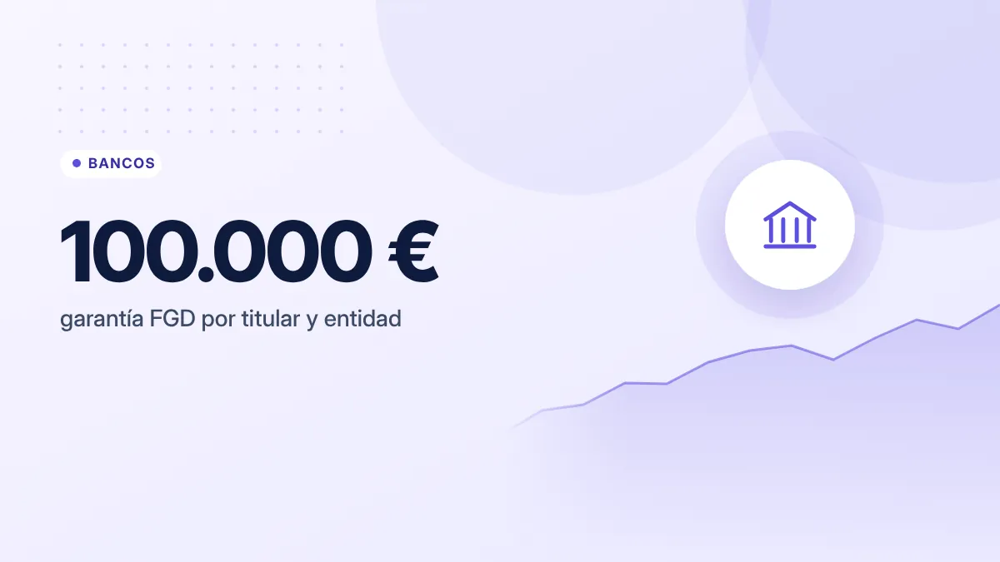

Cuenta remunerada o depósito a plazo fijo: diferencias y cuándo elegir cada uno
Las dos son formas seguras de que tus ahorros generen algo de interés, pero funcionan de manera distinta. Elegir bien depende de cuándo vas a necesitar el dinero.

Puntos clave
- Cuenta remunerada: dinero disponible en cualquier momento; el interés puede cambiar.
- Depósito: dinero inmovilizado durante un plazo a cambio de un interés fijo.
- Ambos están cubiertos por el Fondo de Garantía de Depósitos hasta 100.000 € por titular y entidad.
La cuenta remunerada
Es una cuenta corriente o de ahorro que te paga un interés por el saldo que mantienes. Puedes meter y sacar dinero cuando quieras, normalmente sin penalización.
Características habituales:
- Disponibilidad total. El dinero está siempre a tu alcance.
- Interés variable. El banco puede cambiar el tipo, en especial cuando cambian los tipos de interés del Banco Central Europeo.
- Límites y condiciones. Muchas solo remuneran hasta cierto saldo, o pagan un interés alto solo durante unos meses de promoción. Otras exigen domiciliar la nómina u otros productos.
- Liquidación periódica. Los intereses se suelen abonar cada mes.
El depósito a plazo fijo
Entregas al banco una cantidad durante un plazo determinado (3, 6, 12, 24 meses…) y, a cambio, te paga un interés fijo pactado de antemano.
Características habituales:
- Rentabilidad conocida. Sabes desde el principio cuánto vas a cobrar.
- Dinero inmovilizado. Si lo necesitas antes del vencimiento, puede haber penalización o, en algunos depósitos, ni siquiera se permite la cancelación anticipada.
- Renovación. Algunos se renuevan automáticamente al vencer, a menudo con un tipo peor. Revisa la fecha.
Comparativa rápida
| Cuenta remunerada | Depósito a plazo | |
|---|---|---|
| Disponibilidad | Inmediata | Al vencimiento (o con penalización) |
| Tipo de interés | Variable, puede cambiar | Fijo durante el plazo |
| Ideal para | Fondo de emergencia, ahorro a corto plazo | Dinero que no necesitarás en un plazo concreto |
| Garantía FGD | Sí, hasta 100.000 € | Sí, hasta 100.000 € |
| Tributación de intereses | Base del ahorro del IRPF | Base del ahorro del IRPF |
Seguridad: el Fondo de Garantía de Depósitos
En España, el Fondo de Garantía de Depósitos (FGD) cubre los depósitos en efectivo hasta 100.000 € por titular y por entidad si el banco quiebra. Esto incluye cuentas y depósitos a plazo.
Algunos detalles importantes:
- El límite es por entidad, no por cuenta. Si tienes dos cuentas en el mismo banco, el límite se aplica al total.
- Si una cuenta tiene dos titulares, cada uno está cubierto hasta 100.000 €.
- Si contratas con un banco extranjero que opera en España, tu dinero puede estar cubierto por el fondo de garantía de su país, no por el español. Comprueba cuál es y sus condiciones.
Cómo comparar ofertas
Fíjate siempre en la TAE, no solo en el TIN, porque refleja el rendimiento real en un año teniendo en cuenta la frecuencia de pago de intereses. Si no tienes claro la diferencia, lee nuestra guía sobre TIN y TAE.
Además de la TAE, revisa:
- Saldo máximo remunerado. Una TAE muy alta solo hasta 5.000 € puede rendir menos que una más baja sin límite si tienes más dinero.
- Duración de la promoción. ¿Qué interés paga después del periodo inicial?
- Requisitos. Nómina, recibos, uso de tarjeta, edad.
- Comisiones. Una comisión de mantenimiento puede anular los intereses.
Una oferta con una TAE muy llamativa suele tener letra pequeña: límite de saldo, duración corta o requisitos. Lee las condiciones antes de mover tu dinero.
Cómo tributan los intereses
Los intereses de cuentas y depósitos se consideran rendimientos del capital mobiliario y tributan en la base del ahorro del IRPF. El banco suele aplicar una retención en el momento del pago, que después se regulariza en tu declaración de la Renta. Los tipos de la base del ahorro son progresivos por tramos; consulta los vigentes en la web de la Agencia Tributaria.
¿Cuál te conviene?
- Para tu fondo de emergencia: cuenta remunerada, por la disponibilidad.
- Para un objetivo con fecha (la entrada de un piso dentro de 18 meses, por ejemplo): depósito con un plazo que termine antes de esa fecha.
- Estrategia escalonada: si tienes una cantidad grande, puedes repartirla en varios depósitos con vencimientos distintos para tener dinero disponible cada pocos meses.
Ten en cuenta que ninguno de los dos productos está pensado para hacer crecer tu dinero a largo plazo por encima de la inflación de forma sostenida. Para horizontes de muchos años, conviene conocer otras opciones como los fondos indexados, entendiendo sus riesgos.
En resumen
Cuenta remunerada para el dinero que puedes necesitar en cualquier momento; depósito para el que no tocarás durante un plazo conocido. Compara por TAE, lee la letra pequeña y comprueba que la entidad está cubierta por un fondo de garantía.
Fuentes consultadas
Este artículo es informativo y no constituye asesoramiento financiero, fiscal ni jurídico personalizado. Las cifras son orientativas y pueden cambiar; consulta las fuentes oficiales y, si lo necesitas, a un profesional. Cómo elaboramos nuestras guías.